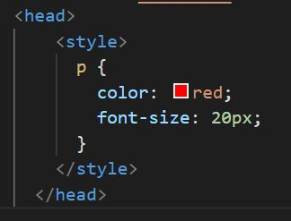

| Description | Code |
|---|---|
| Inline | <
p
style |
| In "head" section of the page |  |
| In separate .css sheet linked to from the "head"section of the page | < head > < link href < |
Start simple: "CSS Specificity is the set of the rules applied to CSS selectors in order to determine which style is applied to an element. The more specific a CSS style is, the higher point value it accrues, and the likelier it is to be present on the element's style." @Emma Bostian, https://dev.to/emmabostian/css-specificity-1kca
When ready for more complexity: Specificity is a weight that is applied to a given CSS declaration, determined by the number of each selector type in the matching selector. When multiple declarations have equal specificity, the last declaration found in the CSS is applied to the element. Specificity only applies when the same element is targeted by multiple declarations. As per CSS rules, directly targeted elements will always take precedence over rules which an element inherits from its ancestor. From https://developer.mozilla.org/en-US/docs/Web/CSS/Specificity
I also dare you to use specificity calculator. And if you need some specificity hacking - this page is your friend.
Difficult to find your way amongst multiple values, multiple, chained and descendant selectors? Stare at this table untill it makes sense to you: